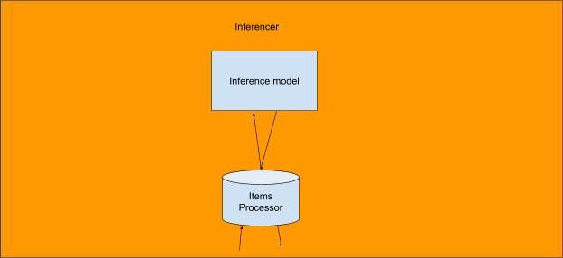
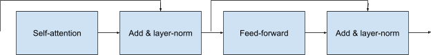
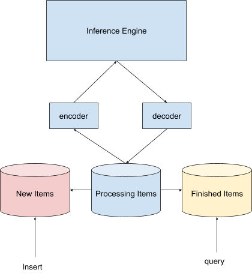

High level design

Detailed Design
Inferencer
This class receives one batch of tokens, and returns a batch of generated tokens.
Inference Model
We use pretty simple self-attention.

Self-attention
The basic formula of the self-attention is:
For the training case, Q, K, V are all . However, for inference, we actually only need to do the inference for the last sequence of each batch.
Meanwhile, we want to keep the cache for K, V.
We have 11 related tensors:
- inp: Input tensor of shape
- lengths: The sequence length of each batch.
- wk, wq, wv:
- new_batch_idx: the index of the new batches. -1 means this index is not new.
- kt_cache: k cache. But we actually always use its transpose.
- v_cahce: v_cache.

- q_output: The result of .
- qkt_output: The result of . We also use it to store the softmax result.
- attention_result: The result of the self-attention block.
We split the responsibilities into 5 cuda kernels.
fill_new_kt_v_cache
This kernel checks the new_batch_idx and inserts into the kt_cache and v_cache accordingly.
- Launch threads.
- If new_batch_idx[blockIdx.z] is not -1, we use inp[i_batch, 1:lengths[i_batch], input_dim] to multiply with wk, wv.
- Update new_batch_idx[blockIdx.z] to -1
- Insert the result into kt_cache and v_cache.
get_latest_kt_q_v
This kernel multiplies each batch’s latest embedding with wk, wq and wv. And set to kt_cache, v_cache and q_output.
qkt
This kernel multiples q with kt. And the lengths is used to avoid necessary computation.
softmax_in_place_with_lengths
Apply softmax_in_place operation for qkt_output. Note any element exceeding the lengths[i_batch] should be 0.
softmax_v
This kernel multiplies the qkt_output with v_cache, and saves into attention_result.
Item Processor
The ItemProcessor manages the items from decoding and to be encoded.

Decoder
The decoder serves 2 tasks:
- Given the embeddings of . The kernel multiplies it with the embedding_table to get similarity of .
- Considering the vocab can be large. We use one block to handle per row, to find the maximum index. Here, we ignore the softmax operation. The result is of shape . Meanwhile, in the same kernel, we can store the embedding of this token () to the inp of shape , given the lengths. This can work because we are using greedy sampling. We have to change this strategy if we use beam search in the future.
- If lengths[i_batch_index] == 0, this is one invalid row. Return -1.
Processing Items
process_decoder_result
- Copy the tokens of to cpu. Find the corresponding tokens and append to pending results.
- For each item, check
- If the token_index is -1, this is one empty row. But still add it to finished_indices because we can add new_items to this row.
- If the token is <EOF> or the length exceeds the maximum, add to finished_items_ and finished_indices.
insert_new_items
- If finished_indices.size() > 0, try to fetch this amount of
Encoder
The encoder only encodes the new items of shape with lengths:
- Calculates the embeddings of shape
 and clone to the corresponding new_batch_idx of inp.
and clone to the corresponding new_batch_idx of inp.
Extend to other structures
This optimization idea can easily apply to any layer:
- Store the cache result for past sequences.
- For new items, with new_items and new_lengths, calculate the cache once, and add to the existing cache.
Future plans
- Inferencer can keep receiving new tokens. We can have a thread to put the new tokens to the NewItems.